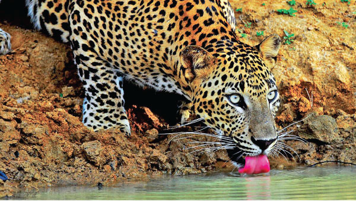

Wilpattu National Park
Wilpattu National Park is a national park in Sri Lanka with the unique feature of "Willus" – natural, sand-rimmed water basins or depressions that fill with rainwater. It is also the largest and the oldest national park in the Sri Lanka. Wilpattu is well known for its leopard population.